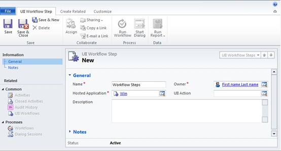

UII Administrator can use the UII Workflow management features to create a workflow step.
To create a new workflow step
- Using CRM administrator credentials, log on to Microsoft Dynamics CRM.
- In the left navigation pane, click Settings > UII Settings > UIIWorkflow Steps.
- The UII Workflow Steps list page appears. In the action pane, click New. The New Workflow Steps page appears, as shown in the following illustration.

- Under General, type the name of the workflow step in the Name box, and then select the owner in the Owner box. In the Action box, select the corresponding action, and in the Hosted Application box, click the Search icon to locate and select the hosted application. Enter a description in the Description box.
- In the left pane, click Notes, and then type any additional information about the workflow step.
- Click Save or Saveand Close.